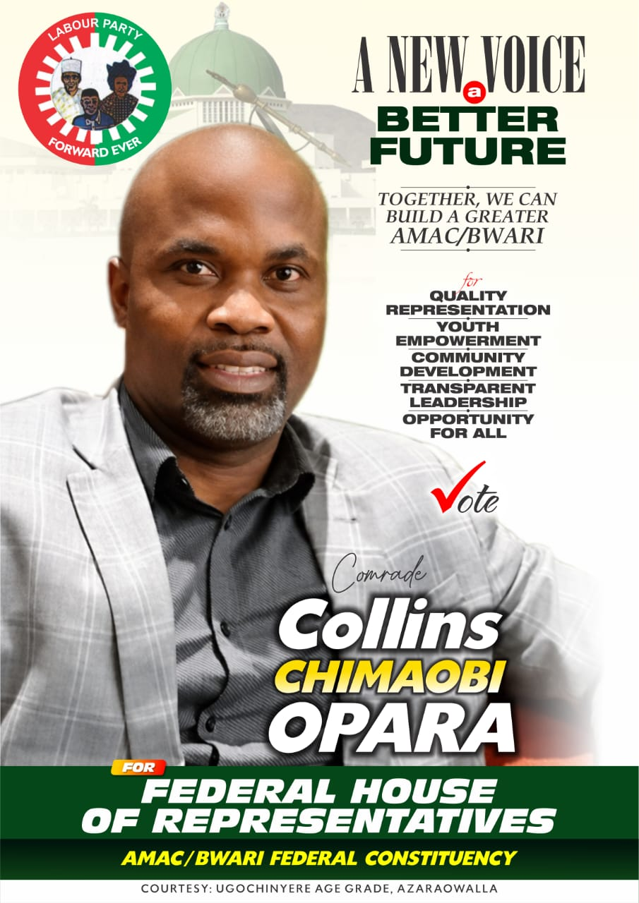
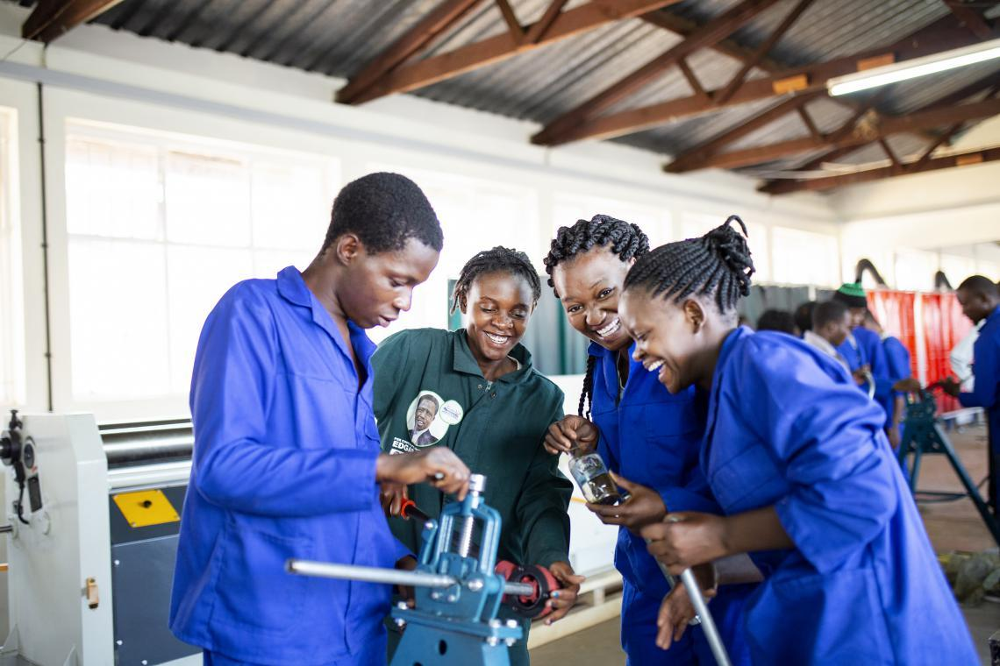
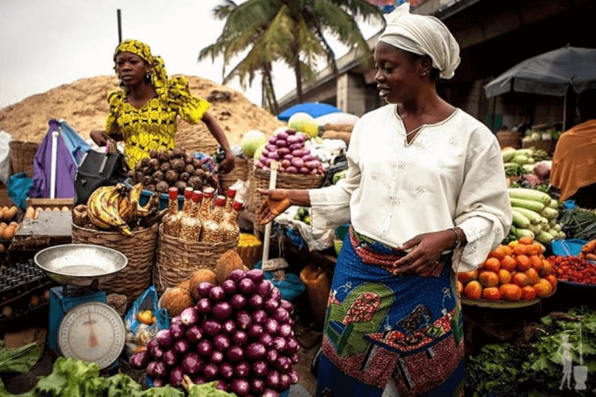
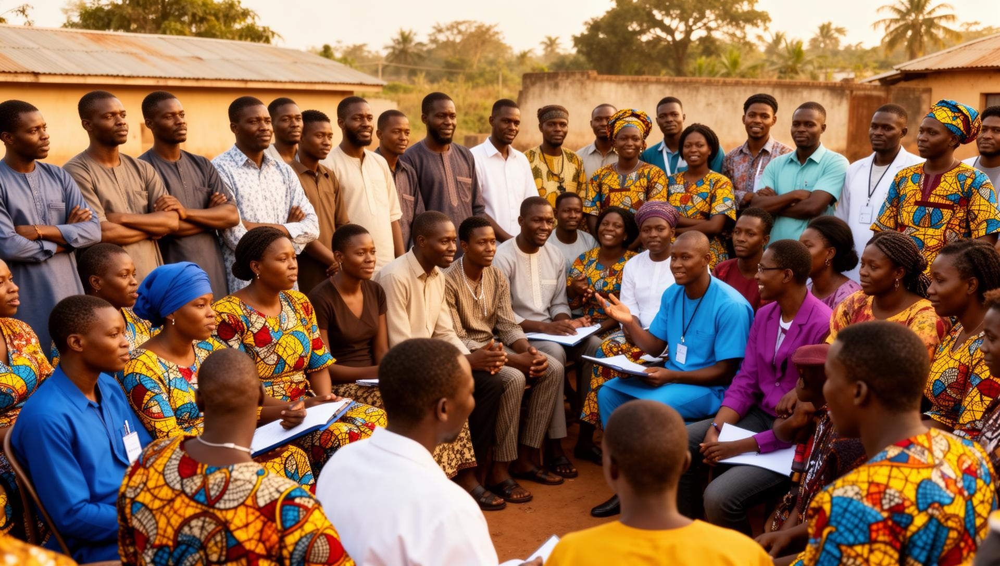
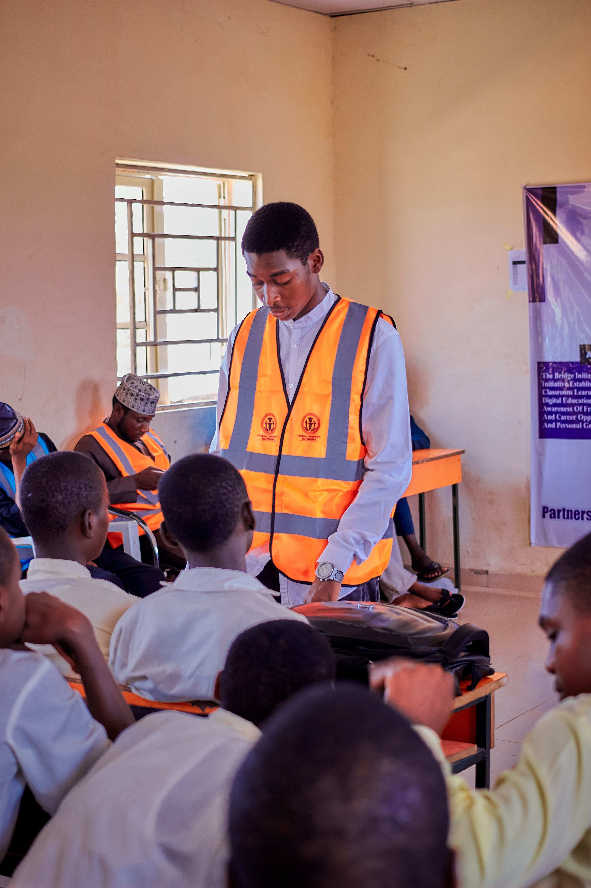
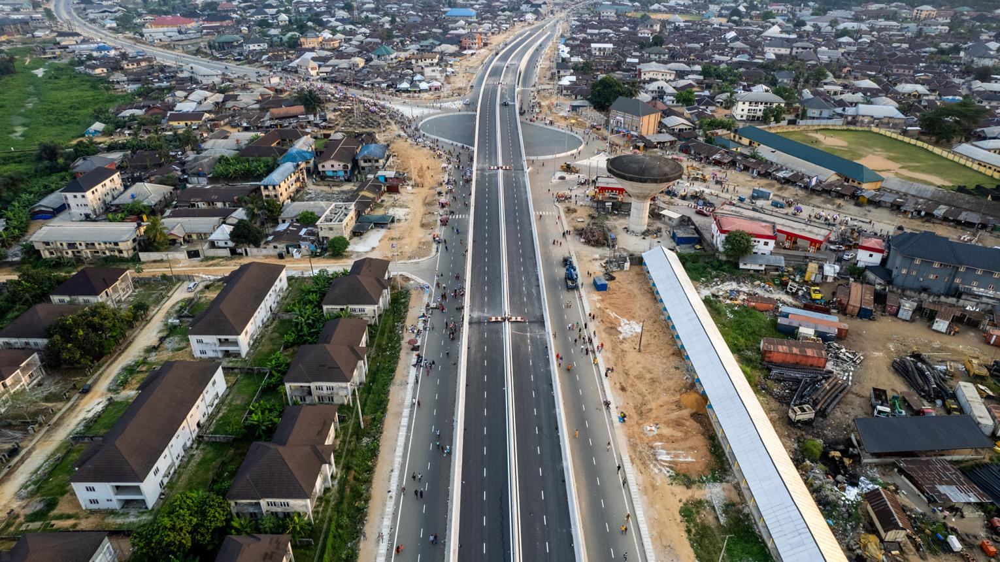
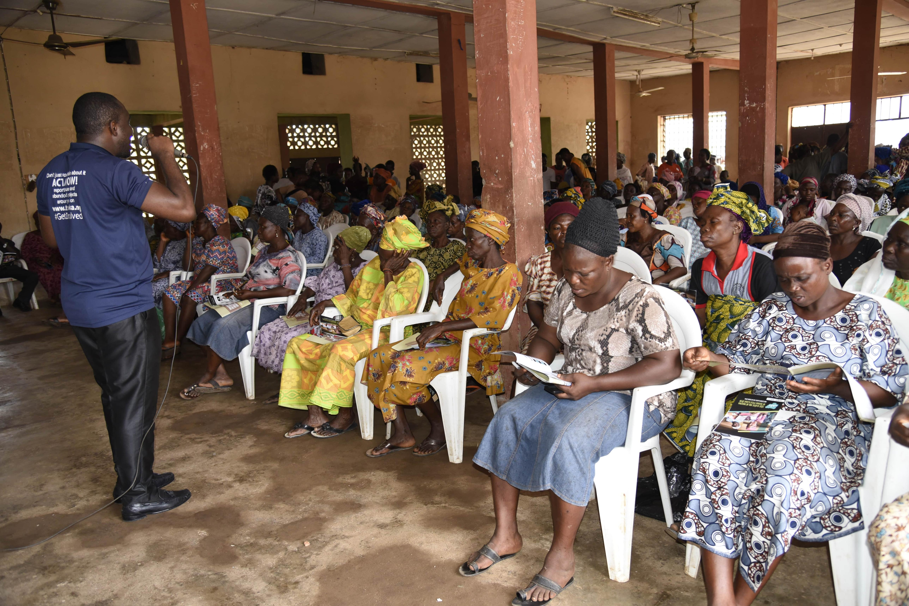

Legislative Advocacy
Advance policies, motions and legislative initiatives that respond to the needs and development priorities of AMAC/Bwari.
A practical development agenda built around people, opportunity, inclusion and sustainable community development.
Empower the People, Develop the Constituency.
Labour Party — Papa, Mama, Pikin.

Building a stronger, more inclusive and economically empowered AMAC/Bwari through responsible representation and people-centred development.
AMAC and Bwari are home to people from different backgrounds, cultures, professions and communities. Every resident contributes to the social and economic life of the Federal Capital Territory.
Our vision is to advance a constituency where opportunity is not restricted by background, where small businesses can grow, where young people can develop meaningful skills, and where families have better access to essential services.
Under the FCT Non-Indigenes Unity Mandate, Comrade Collins Chimaobi Opara seeks to promote unity, inclusive representation, human capital development and practical interventions that respond to the needs of ordinary people.
This manifesto presents six priority areas through which the campaign intends to pursue these objectives using legislative advocacy, constituency engagement, oversight and collaboration with relevant institutions.
Six interconnected priorities focused on human empowerment, economic opportunity, infrastructure and social inclusion.

PRIORITY 01Young people deserve more than promises of employment. They deserve access to practical skills, vocational training, mentorship and opportunities to participate meaningfully in the economy.
Our agenda seeks to promote skills acquisition and employability programmes that connect residents to relevant industries and opportunities.
Our Goal: A more skilled, productive and economically empowered population.

PRIORITY 02Small businesses, market traders, artisans and women entrepreneurs play an important role in the economic life of our communities.
Yet many struggle with limited access to affordable financing, business development support and the resources needed to expand their activities.
Our Goal: Stronger small businesses, empowered women and more sustainable household incomes.

PRIORITY 03Access to quality and affordable healthcare is essential to the wellbeing, productivity and dignity of every family.
We recognise the importance of strengthening primary healthcare, improving awareness and advocating better access to essential healthcare services.
Our Goal: Healthier families and improved access to essential healthcare services.

PRIORITY 04Education remains one of the strongest foundations for personal development, economic independence and national progress.
Our vision is to promote inclusive access to quality education and encourage initiatives that reduce barriers preventing children and young people from reaching their potential.
Our Goal: More inclusive learning opportunities and a stronger educational foundation for the next generation.

PRIORITY 05Good roads, functional markets, reliable infrastructure and safe neighbourhoods contribute directly to economic growth and quality of life.
Our agenda seeks to advance infrastructure development through responsible representation, budgetary advocacy, legislative oversight and engagement with relevant government authorities.
Our Goal: Better-connected communities, improved trading environments and safer neighbourhoods.

PRIORITY 06The Federal Capital Territory is home to Nigerians from every part of the country. Their contributions to commerce, education, public service and community development are an important part of the FCT's identity.
We believe that unity must be reflected in meaningful participation, fair access to opportunities and responsible representation.
Our Goal: A united constituency where every resident is treated with dignity and has an opportunity to contribute to development.
A manifesto must be supported by a clear approach to representation, implementation and accountability.
Advance policies, motions and legislative initiatives that respond to the needs and development priorities of AMAC/Bwari.
Advocate equitable allocation of public resources and follow up on constituency projects through appropriate institutions.
Maintain regular engagement with residents, community leaders, associations, youth groups and business owners.
Work with relevant ministries, agencies, private organisations and development partners to advance practical interventions.
Monitor constituency-related interventions, raise concerns and seek explanations where implementation falls short.
Promote accessible communication about priorities, progress, challenges and constituency representation.
We recognise that meaningful development requires more than political promises. It requires listening, consistent engagement, practical solutions and the willingness to be held accountable.
The six-point agenda represents our development priorities and the issues we intend to champion on behalf of the people of AMAC/Bwari.
As a representative, our responsibility will be to amplify the voices of residents, advocate policies that advance their interests, exercise legislative oversight and pursue meaningful collaboration for community development.
"Empower the People, Develop the Constituency."
Comrade Collins Chimaobi Opara Labour Party | FCT Non-Indigenes Unity Mandate
Explore the detailed policy proposals, development priorities and commitments of Comrade Collins Chimaobi Opara for AMAC/Bwari Federal Constituency.
The complete campaign manifesto, containing the full policy proposals and development commitments, will be published here when the final document is ready.
Development begins when people come together with a shared vision and a commitment to positive change.
Labour Party — Papa, Mama, Pikin.